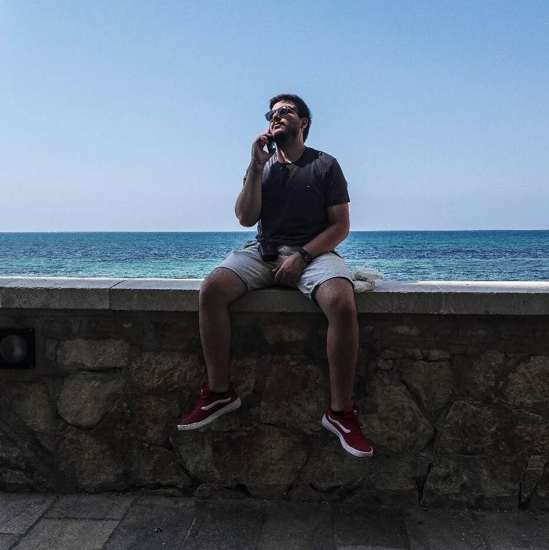

About Me

Ciao,
Mi chiamo Giuseppe Martone, nato a Trani ma ho passato buona parte della mia vita in un piccolo paesino della provincia di Caserta. Sono sempre stato incuriosito dai perchè della vita, dal capire come funzionano le cose che ci circondano. Negli anni ho potuto imparare qualcosa dai libri, ma dal primo approccio con la Biologia al liceo ho capito che avrei voluto studiare e capire sempre di più. I primi veri approcci coincidono col corso di Laurea in Biotecnologie, dove ho potuto studiare anatomia e fisiologia sia umana, animale che vegetale. In quegli anni ho cercato di capire in che campo della scienza avrei voluto specializzarmi, per poi scegliere il corso di Laurea Speclialistica in Biotecnologie Mediche, con tesi i Biologia Molecolare. Scegliere questa materia è stato fondamentale per capire il mio posto nell'enorme ricerca della Scienza. Come hobby, infatti, ho imparato da autoditatta le basi di alcuni linguaggi di programmazione, come Python e C++, e non ho perso l'opportunità di poter lavorare dati genomici, il mio campo di interesse, con i miei interessi per l'informatica; potendo imparare anche un nuovo linguaggio di programmazione, R, specifico per analisi statistiche per dati medici. Comunque, é possibile trovare una sezione in cui parlo dei miei studi e delle mie esperienze.
Le mie ulteriori passioni e hobby sono il cinema, il karate, il gaming, i viaggi e i live events. Mi ritengo una persona determina e capace di lavorare sia in gruppo che da solo, portando a termine qualsiasi compito che mi venga assegnato. Durante gli anni ho avuto l'opportunità di potermi relazione con differenti cariche Professionali, sia nella mia lingua madre che in quella inglese, permettendomi di essere un attivo partecipante durante anche le situazioni più formali.
Experiences
Sviluppo modello predittivo di Machine Learning, Project Work, Università degli Studi di Padova, Padova (PD).
Durata: Luglio 2021 - Agosto 2021
Descrizione: Sviluppo di un modello predittivo con tecniche profonde di Machine Learning su dati sequenziali di follow up post operatori.
Sviluppo Tool per dati genomici, Tesista, Università degli Studi di Torino, Torino (TO).
Durata: Febbraio 2019 - Aprile 2020
Descrizione: Sviluppo tool per analisi in cluster di dati ottenuti dall'unione di database ottenuti con la tecnologia Microarray ed RNA Sequencing.
Rappresentante Corso di Laurea, Università degli Studi di Torino, Torino (TO).
Durata: Ottobre 2017 - Maggio 2020
Organizzatore e curatore, muratterra.it, Arienzo (CE).
Durata: Gennaio 2016 - Ottobre 2016
Descrizione: Organizzatore e curatore del concorso CORTIeBREVI nell'ultima edizione dell'organizzazione no profit MURATTERRA.
Organizzazione database genomici, Tesista, Università degli Studi della Campania Luigi Vanvitelli, Caserta (CE).
Durata: Febbraio 2017 - Aprile 2021
Rappresentante Corso di Laurea, Università degli Studi della Campania Luigi Vanvitelli, Caserta (CE).
Durata: Ottobre 2014 - Gennaio 2017
Studies
Gli ultimi studi conseguiti sono:
Master
Master di II livello in Machine Learning e Big Data per la medicina di precisione e la ricerca biomedica,
presso l'Università degli Studi di Padova, Padova (PD).
Durata: Novembre 2020 - Settembre 2021
Laurea
Laurea Specialistica classe LM-09 in Biotecnologie Mediche, presso l'Università degli Studi di Torino, Torino (TO).
Durata: Ottobre 20217 - Maggio 2020
Laurea Triennale classe L-02 in Biotecnologie, presso l'Università degli Studi della Campania Luigi Vanvitelli, Caserta (CE).
Durata: Ottobre 2014 - Maggio 2017
Ingegneria Biomedica, Università degli Studi di Napoli Federico II, Napoli (NA).
Durata: Ottobre 2013 - Luglio 2014
Cambio percorso accademico.
Certificati
Ulteriori certificati conseguiti al di fuori del percorso universitario possono essere trovati nell'apposita sezione corsi.
Contact
Courses
Di seguito i certificato conseguiti durante la mia carriera:
Powe BI
Power BI: Dashboards for Beginners, Joshua Rischin, LinkedIn
SAP
SAP ERP Essential Training, Justin Valley, LinkedIn
Tableau
Tableau Essential Training, Curt Frye, LinkedIn
Tableau and R for Analytics Project, Curt Frye, LinkedIn
Integrating Tableau and R for Data Science, Ben Sullins, LinkedIn
Tidyverse, R
Introduction to the Tidyverse, Johns Hopkins University, Coursera
Wrangling Data in the Tidyverse, Johns Hopkins University, Coursera
Importing Data in the Tidyverse, Johns Hopkins University, Coursera
É possibile scaricare il mio Curriculum Vitae, in formato pdf, cliccando il bottone.